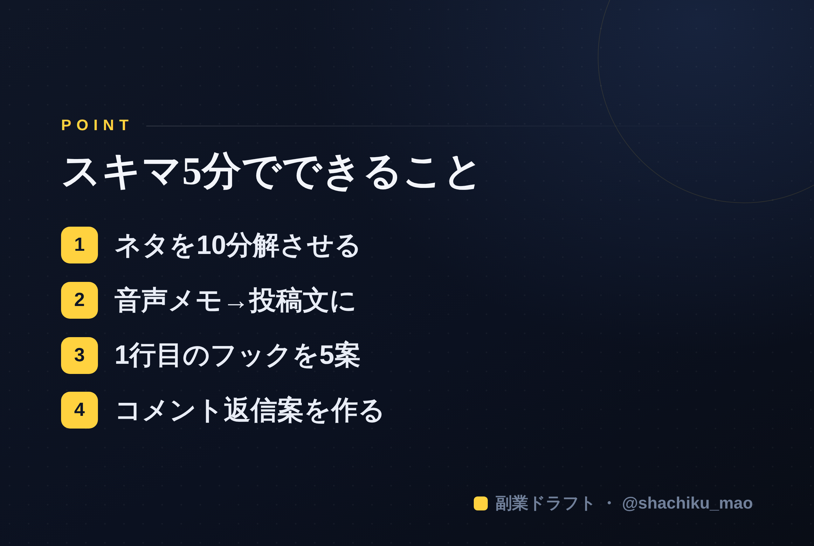

使い方
1. 「タイトルをコピー」→ note のタイトル欄に貼る
2. オレンジのラベルの画像（見出し画像）を note の見出し画像に設定
3. 「本文1をコピー」→ note本文に貼る
4. 青いラベルの位置（本文の途中）に、同じ名前の画像をアップして挿入
5. 「本文2をコピー」→ 続きを貼る
※ 見出しが普通の文字になったら、その行を選んで「大見出し」に設定してください
1. 「タイトルをコピー」→ note のタイトル欄に貼る
2. オレンジのラベルの画像（見出し画像）を note の見出し画像に設定
3. 「本文1をコピー」→ note本文に貼る
4. 青いラベルの位置（本文の途中）に、同じ名前の画像をアップして挿入
5. 「本文2をコピー」→ 続きを貼る
※ 見出しが普通の文字になったら、その行を選んで「大見出し」に設定してください
スキマ時間5分でできる、AI副業の作業リスト【会社員向け】
見出し画像に設定：seo-06.png
「まとまった時間が取れないから、副業発信が進まない」——これはよくある悩みです。でも、発信の多くはスキマ5分の積み重ねで前に進みます。この記事では、通勤や休憩中にAIと一緒にできる"5分タスク"をまとめました。
通勤・休憩中にできる5分タスク
① ネタを1つ、AIに分解させる（5分）
「（テーマ）を10の切り口に分解して」とAIに送るだけ。帰る頃には投稿ネタが10個たまっています。
② 音声メモ→投稿文（5分）
思いついたことをスマホに音声メモ→その文字起こしをAIに渡して「投稿文に整えて」。机に向かわずに1本できます。
③ 1投稿の"1行目"を5案出す（5分）
下書きの投稿を貼って「1行目のフックを5案出して」。刺さる出だしが選べます。
④ コメントの返信案を作る（5分）
ついたコメントをAIに貼って「返信を3案（共感／体験／質問返し）で」。会話が続き、初速がつきます。
⑤ プロフィールを見直す（5分）
「肩書き＋誰の役に立つか」でプロフィール文を3案。フォロー率に直結します。
コツ：作業を"貯金"する発想
5分タスクは「その場で完成」させなくてOK。ネタや下書きを貯めておくと、週末にまとめて仕上げられます。発信が続く人は、才能ではなく"作りだめ"の習慣を持っているだけです。
本文中に挿入：seo-06-body.png（この記事のポイント）

まとめ
- 発信はスキマ5分の積み重ねで進む
- ネタ分解・音声メモ・フック出し・返信・プロフ見直しが5分タスク
- 完成させず"貯める"のがコツ
※ ここからは宣伝です。 この「スキマで棚卸し→下書き」をまとめて手伝うツール「副業ドラフト」を作りました。ヒヤリング・強み棚卸し・Threads3本まで無料で試せます → https://note-threadssf.onrender.com
🎁 スキマで使えるプロンプト集は公式LINEで無料配布中 → https://lin.ee/RzyA13P
役に立ったら、スキ＆フォローで応援してもらえると嬉しいです😊